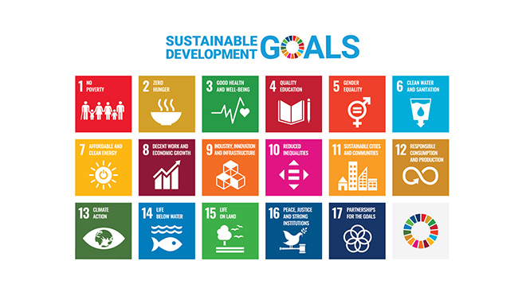

Sustainability

Is “Sustainability” Sustainable?
June 2023 [2 Parts]
Summary
Sustainability needs to become sustainable, and that can only happen when people and companies step up and put this at the heart of their agenda. And that is just what Mitsubishi Electric has been quietly doing over many years, from its successful series of environmental activities to its efforts towards equal opportunities, and now as it helps others to do the same as it continues its own “journey” with the establishment of a new Sustainability Division.

A Commitment to Sustainability:
Delivering Both Economic and Social Value